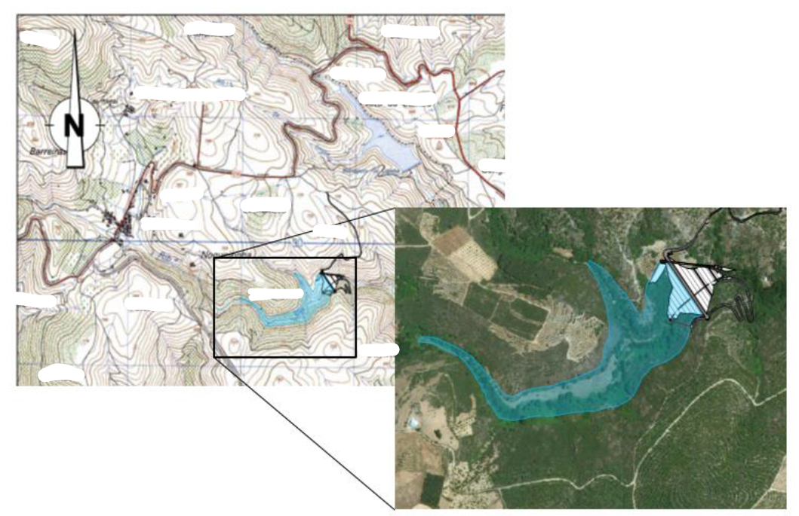
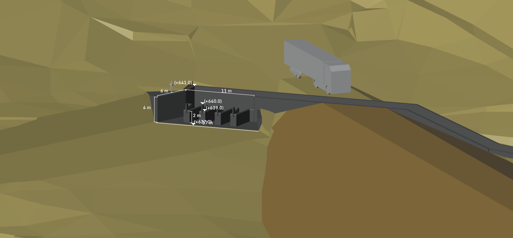

Department:DHA - Hydraulics and Environment
Unit: NRE - Water Resources and Hydraulic Structures
Authors: LSM, MC - Lourenço Sassetti Mendes, Marcelo Carvalho
This section provides the localization of the project. The map below offers a clear view of the project's geographical positioning.
This section provides a detailed view of the initial implantation process. The 3D visualization allows for an in-depth understanding of the implantation.
This section showcases an additional image relevant to the project, providing further context and visual detail.
This section provides a view of the physical model, offering further insights into different aspects of the procedure.
The following 3D visualization showcases the numerical modeling for the project, highlighting key calculations and simulations used in the process.